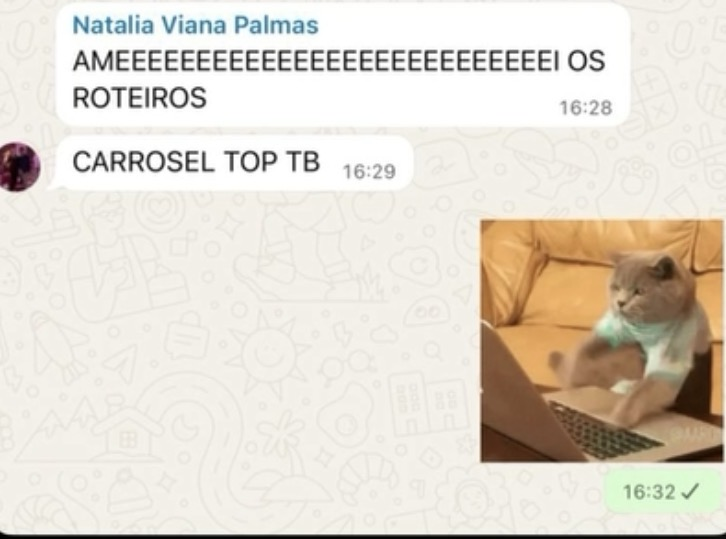
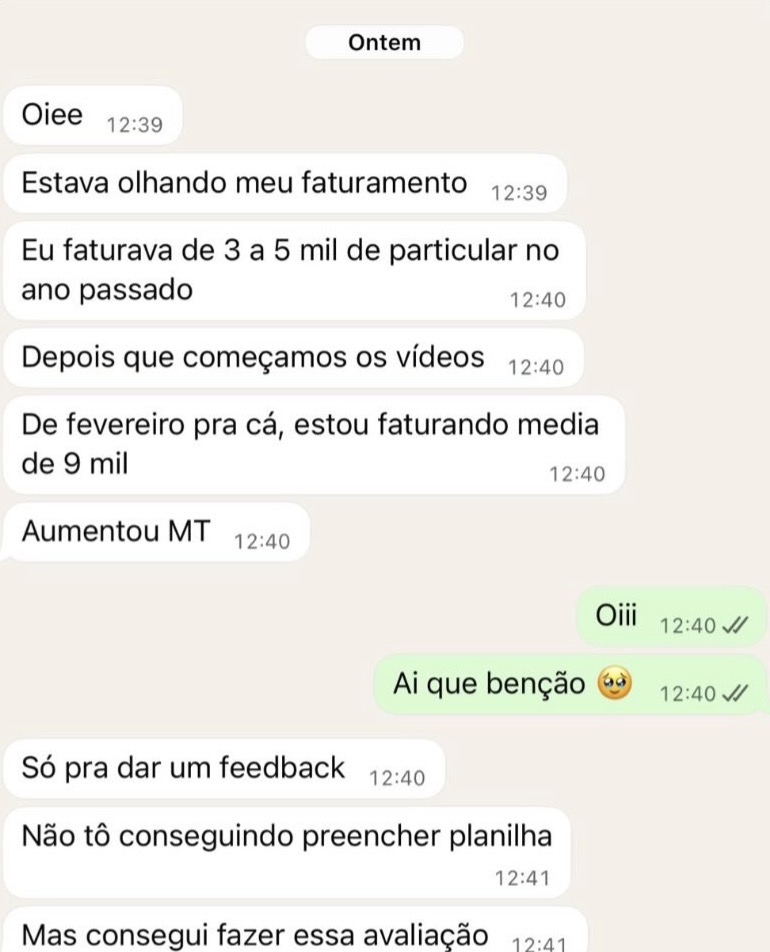
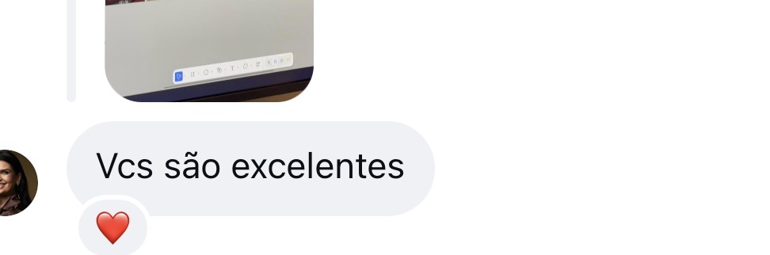

Marketing e fortalecimento de marca
Estratégias de posicionamento, conteúdo e branding para lançar e fortalecer marcas no mercado.
AGÊNCIA DE MARKETING E TECNOLOGIA ↗
Estratégia de marca e capacidade técnica de desenvolvimento em um único método: da construção da marca à infraestrutura digital (sites, aplicativos e CRM) que sustenta o negócio.
DESENVOLVIMENTO DE SITES ↗
Sites institucionais e comerciais sob medida, construídos para sustentar a autoridade que a sua marca já tem.
POSICIONAMENTO ↗
RESULTADOS ↗
Prints reais de mensagens de quem trabalha com a Azuz.



O QUE FAZEMOS ↗
Deixamos de ser apenas uma agência de marketing tradicional. Hoje combinamos estratégia de marca com capacidade técnica de desenvolvimento para atender o cliente de ponta a ponta: da construção da marca à infraestrutura digital que sustenta o negócio.
Estratégias de posicionamento, conteúdo e branding para lançar e fortalecer marcas no mercado.
Criação de sites institucionais e comerciais sob medida para os clientes.
Construção de aplicativos próprios para clientes que precisam de soluções digitais personalizadas.
Desenvolvemos e operamos nosso próprio sistema de CRM, usado internamente e oferecido como solução para clientes.
O diagnóstico aponta a frente certa antes de qualquer contrato.
Formulário de InteresseMÉTODO ↗
Leitura crítica da marca hoje: presença digital, discurso, concorrência e ponto real de autoridade.
Território de posicionamento, discurso e prioridade de frentes definidos antes de qualquer execução.
Marca, site, aplicativo e CRM rodando de forma integrada, sob o mesmo método.
Acompanhamento de indicadores reais: autoridade, geração de contato qualificado e conversão.
SOBRE A AZUZ ↗
A Azuz Digital nasceu do rebranding da MarkMed. É uma agência founder-led: reconhecível tanto como empresa quanto como extensão da autoridade de quem está à frente dela.
Fundada e liderada por Thaynara Araujo, CEO, Diretora Criativa e Estrategista de Marca. O trabalho é feito para marcas com autoridade técnica real, médicos, consultoras, advogados e empresários que ainda não têm a presença digital proporcional ao que já construíram.
Falar com especialista"Marketing é consequência. Estratégia é a causa."
Thaynara Araujo
CEO · Diretora Criativa · Estrategista de Marca
PRAÇAS DE ATUAÇÃO ↗
Matriz física em Goiânia, com marcas atendidas em outras praças do país pelo mesmo método.
Clientela atendida em Lisboa, com o mesmo método de diagnóstico, estratégia e execução.
DÚVIDAS FREQUENTES ↗
O que costuma ser perguntado antes de fechar com a Azuz.
É uma leitura rápida e honesta da presença digital atual da marca: o que está funcionando, o que está travando o crescimento e qual frente (marketing e marca, site, aplicativo ou CRM) resolve primeiro. Sem contrato fechado antes disso.
Não. O diagnóstico aponta a prioridade real do momento. Muitas marcas começam por marketing e fortalecimento de marca, e entram em site, aplicativo ou CRM depois que a base está sólida.
Depende da frente e do ponto de partida da marca. Campanhas de tráfego têm janela de teste de 10 a 14 dias para validar criativo e público. Posicionamento e branding são investimentos de médio prazo, construídos para se sustentar, não para picos isolados.
Hoje: Goiânia, Palmas e Lisboa, com atendimento remoto para outras praças quando o método se aplica.
Não. Toda produção apoiada por IA passa por revisão humana antes de ir ao ar. Resposta em DM e qualquer situação de crise são sempre conduzidas por pessoas, nunca automatizadas.
PRÓXIMO PASSO ↗
Agende o diagnóstico e descubra qual frente do método resolve o momento atual da sua marca primeiro.